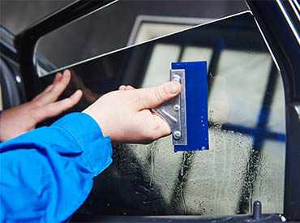

Window Tinting

Automotive Window Tinting in Winnipeg
At Nawab Tint, we provide professional window tinting services in Winnipeg for all types of vehicles—cars, trucks, SUVs, and commercial fleets. Whether you're looking to improve aesthetics, reduce interior heat, protect your passengers, or gain privacy, we deliver flawless results using premium-grade films and precision techniques.
Style, Comfort, and Protection—Expertly Installed by Nawab Tint
At Nawab Tint, we provide professional window tinting services in Winnipeg for all types of vehicles—cars, trucks, SUVs, and commercial fleets. Whether you're looking to improve aesthetics, reduce interior heat, protect your passengers, or gain privacy, we deliver flawless results using premium-grade films and precision techniques.
Why Window Tint Matters
Window tinting is more than just style—it's functional protection for your vehicle and everyone inside. With Winnipeg's extreme weather and sunlight, quality window film helps reduce heat buildup, block UV rays, and prevent interior fading. Our tints also add a level of privacy and can deter theft.
Benefits of Our Tinting:
- Blocks up to 99% of harmful UV rays
- Reduces interior heat by up to 60%
- Prevents fading and cracking of seats and dashboards
- Adds a layer of privacy and theft deterrence
- Reduces glare for safer driving

Chameleon Window Tint

Chameleon Window Tint is not your average window film — it’s a high-performance, color-shifting tint designed to make a statement. With its unique ability to change color depending on lighting conditions, angle of view, and temperature, this innovative tint creates a dynamic, eye-catching effect that stands out on the road. Whether it's vibrant blues and purples under direct sunlight or softer hues in the shade, Chameleon Tint gives your vehicle a bold, futuristic look unlike anything else. But it’s not just about style — it’s about protection and performance too. Chameleon Window Tint is engineered to block up to 99% of harmful UV rays, helping to protect your skin and prevent your vehicle’s interior from fading. It also reduces heat buildup inside the car, making for a cooler, more comfortable ride, especially during hot summer months. Available in a range of Visible Light Transmission (VLT) levels, Chameleon Tint can be installed in compliance with local tinting laws while still offering excellent visibility and glare reduction. The film is made from high-quality materials that resist fading, bubbling, and peeling over time, ensuring your vehicle maintains a pristine, professional appearance for years to come.
Is window tinting legal in Manitoba?
Yes, window tinting is legal in Manitoba, but there are specific regulations. At Nawab Tint, we guide you through legal options to keep your vehicle compliant and stylish.
How long does window tinting take?
Tinting a full vehicle typically takes 2–4 hours, depending on the type of vehicle and tint film selected. We prioritize both speed and quality, ensuring your tint is installed professionally and without imperfections.
How long does window tint last?
With proper care, our high-quality tint films can last 10 years or more.
Can window tint be removed or changed later?
Yes, window tint can be safely removed or replaced. At Nawab Tint, we offer professional tint removal services using tools that avoid damage to your glass or defroster lines.